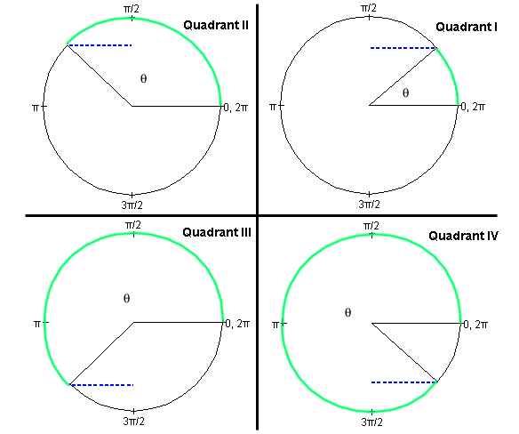
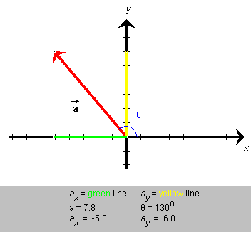

is given in
terms of its scalar components ax and
ay, as illustrated in Figure 2a below. How can
one express ax in terms of a and q, where the angle could be in any quadrant,
e.g., the second quadrant shown in Figure 2a?
is given in
terms of its scalar components ax and
ay, as illustrated in Figure 2a below. How can
one express ax in terms of a and q, where the angle could be in any quadrant,
e.g., the second quadrant shown in Figure 2a?
Cosine Function. The definition of the cosine in the four basic quadrants is illustrated in Figure 2 below. Angles are indicated in the same way as in Figure 1 on Page 2. The circle is again a unit circle, i.e., a circle of radius 1.

Figure 2
Definition of the cosine. The cosine of the angle q is equal to the length of the dotted blue line if the circle is a unit circle. This line is the perpendicular dropped from the point where the variable radius meets the unit circle to the vertical through the center of the circle. The vertical line through the center of the circle is not indicated in Figure 2.Imagine a pair of x,y axes with their origin at the center of the circle, the x-axis pointing to the right towards the 0 rad point and the y-axis pointing upward towards the p/2 rad point. Then,
cos q = x
where x is the x-coordinate of the point where the variable radius meets the unit circle.
This definition also works for angles greater than 360o or 2p rad and less than 0. For the angles q and q + 2pn rad, where n is any positive or negative integer, the variable radius points in the same direction. Consequently, the sine is the same for these angles. Thus, the sine is a periodic function with a period of 2p rad or 360o.
Like the sine, the cosine is a function whose values are between -1 and 1. Check the four basic fixed points:
Check that for angles in the first quadrant, the more general definition of the cosine presented here agrees with the definition of the cosine as the ratio of (adjacent side)/hypotenuse in a right-angle triangle.
Application of the Cosine Function
Suppose a vector is given in
terms of its scalar components ax and
ay, as illustrated in Figure 2a below. How can
one express ax in terms of a and q, where the angle could be in any quadrant,
e.g., the second quadrant shown in Figure 2a?

Figure 2a
If the circle in Figure 2 used in the definition of the cosine had not been a unit circle, but a circle of radius r, the definition of the cosine could have been stated as
cos q = x / r .
Since, for a given angle q, the coordinate x is proportional to r, the ratio x / r is independent of r and always equal to cos q.
We have the same geometry in Figure 2a as in Figure 2. ax corresponds to x and a to r. Thus,
sin q = ax / a
whence
ax = a sin q.
This equation applies in any quadrant, just as the definition of the sine in terms of x / r applies in any quadrant.